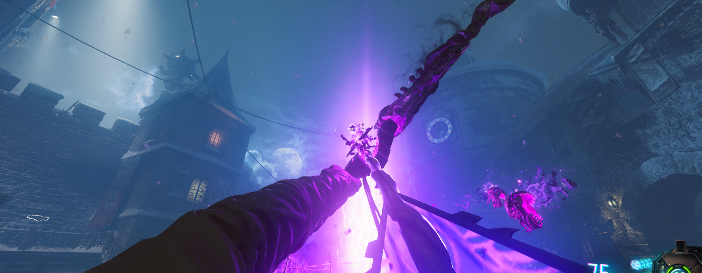

Arco Oscuro (Der Eisendrachen)

Requisitos: Tener el arco normal
Conseguir la flecha: En la zona del Doble-Tap, cerca del primer dragón habrá un símbolo en el techo al que podremos disparar con el arco. La flecha caerá de él.
Sala de la voz: Iremos a la zona debajo de la torre del reloj y en la sala veremos una baldosa iluminada por una luz violeta. Mataremos a un zombie cuerpo a cuerpo con la flecha del arco encima de esta baldosa y luego interactuamos con el agujero.
Encontrar las 6 calaveras Buscaremos las 6 calaveras repartidas por el mapa e interactuaremos con cada una de ellas. Aquí las ubicaciones con la mejor ruta:

Escuchar y conseguir los símbolos La voz nos dirá una secuencia de palabras que tendremos que memorizar. Ejemplo: Corona, Corazón y Cuerno. Si nos olvidamos dispararemos una flecha al jarrón y volverá a repetirlo. Luego tendremos que matar zombies hasta que consigamos que nos den los 6 símbolos.
Si nos fijamos en la zona de la voz cuando conseguimos un símbolo este se ilumina, los necesitamos todos.
Sala de los caballeros: Ahora iremos a la sala de los caballeros (la de después del cuarto de Samantha) y presionaremos las estatuas con las figuras de las palabras que nos dijo la voz. En mi caso interactúo primero con la estatua de la corona, después la del corazón y finalmente la del cuerno. Cada una nos dirá un símbolo (El orden es muy importante) que tendremos que memorizar.
Aquí os dejo una herramienta con la que podremos apuntarlo todo:
Cuando tengamos los símbolos en orden volveremos a la sala de la voz y dispararemos con el arco a los tres símbolos del suelo en el orden que obtuvimos. De esta manera tendremos el nombre de la voz.
Finalmente recogeremos la flecha mejorada.
Colocar flecha:Ahora como con todos los arcos, la colocaremos en su correspondiente cofre de la pirámide y la cargaremos de almas.
Recoger arco:Una vez completado, obtendremos el arco mejorado.